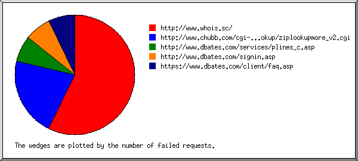
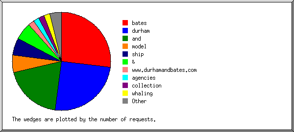
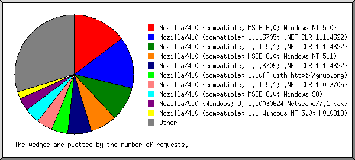
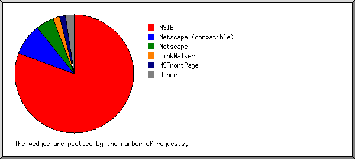
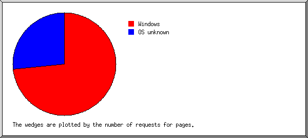
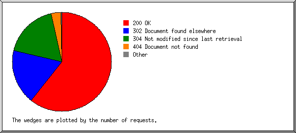
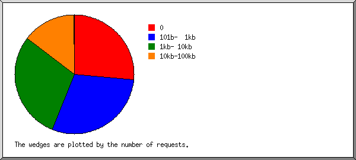
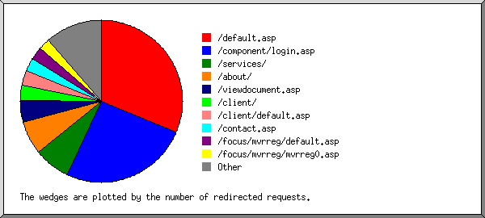
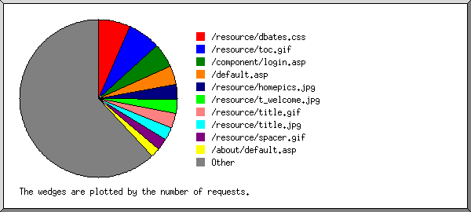

Web Server Statistics for es57045 Web Server Statistics for es57045
Web Server Statistics for es57045 Web Server Statistics for es57045(Go To: Top: General Summary: Monthly Report: Daily Summary: Hourly Summary: Failed Referrer Report: Search Word Report: Browser Report: Browser Summary: Operating System Report: Status Code Report: File Size Report: Redirection Report: Request Report)
This report contains overall statistics.
(Figures in parentheses refer to the 7-day period ending Mar 31
2004 at 11:59 PM).
Successful requests: 4,975 (694)
Average successful requests per day: 162 (99)
Logfile lines without status code: 96 (0)
Successful requests for pages: 15 (0)
Failed requests: 213 (57)
Redirected requests: 1,142 (213)
Distinct files requested: 171 (112)
Distinct hosts served: 435 (90)
Corrupt logfile lines: 2
Unwanted logfile entries: 15
Data transferred: 28.286 Mbytes (4.049 Mbytes)
Average data transferred per day: 947.300 kbytes (592.429 kbytes)
(Go To: Top: General Summary: Monthly Report: Daily Summary: Hourly Summary: Failed Referrer Report: Search Word Report: Browser Report: Browser Summary: Operating System Report: Status Code Report: File Size Report: Redirection Report: Request Report)
This report lists the activity in each month.
Each unit () represents 1 request for a page.
month: #reqs: #pages: --------: -----: ------: Mar 2004: 4975: 15:Busiest month: Mar 2004 (15 requests for pages).
(Go To: Top: General Summary: Monthly Report: Daily Summary: Hourly Summary: Failed Referrer Report: Search Word Report: Browser Report: Browser Summary: Operating System Report: Status Code Report: File Size Report: Redirection Report: Request Report)
This report lists the total activity for each day of the week, summed over all the weeks in the report.
Each unit () represents 1 request for a page.
day: #reqs: #pages: ---: -----: ------: Sun: 330: 0: Mon: 826: 0: Tue: 885: 0: Wed: 1324: 13: Thu: 769: 0: Fri: 453: 2: Sat: 388: 0:
(Go To: Top: General Summary: Monthly Report: Daily Summary: Hourly Summary: Failed Referrer Report: Search Word Report: Browser Report: Browser Summary: Operating System Report: Status Code Report: File Size Report: Redirection Report: Request Report)
This report lists the total activity for each hour of the day, summed over all the days in the report.
Each unit () represents 1 request for a page.
hour: #reqs: #pages: ----: -----: ------: 0: 186: 0: 1: 269: 0: 2: 171: 0: 3: 237: 0: 4: 62: 0: 5: 380: 0: 6: 147: 0: 7: 120: 0: 8: 58: 0: 9: 47: 0: 10: 22: 0: 11: 21: 0: 12: 42: 0: 13: 63: 0: 14: 31: 0: 15: 111: 0: 16: 626: 10: 17: 464: 3: 18: 299: 0: 19: 342: 0: 20: 356: 2: 21: 247: 0: 22: 316: 0: 23: 358: 0:
(Go To: Top: General Summary: Monthly Report: Daily Summary: Hourly Summary: Failed Referrer Report: Search Word Report: Browser Report: Browser Summary: Operating System Report: Status Code Report: File Size Report: Redirection Report: Request Report)
This report lists the referrers containing broken links to the site.

Listing referring URLs, sorted by the number of failed requests.
#reqs: URL
-----: ---
8: http://www.whois.sc/
3: http://www.chubb.com/cgi-bin/agentlookup/ziplookupmore_v2.cgi
1: http://www.dbates.com/services/plines_c.asp
1: http://www.dbates.com/signin.asp
1: https://www.dbates.com/client/faq.asp
(Go To: Top: General Summary: Monthly Report: Daily Summary: Hourly Summary: Failed Referrer Report: Search Word Report: Browser Report: Browser Summary: Operating System Report: Status Code Report: File Size Report: Redirection Report: Request Report)
This report lists which words people used in search engines to find the site.

Listing query words, sorted by the number of requests.
#reqs: search term
-----: -----------
14: bates
13: durham
10: and
3: model
3: ship
3: &
1: www.durhamandbates.com
1: agencies
1: collection
1: whaling
1: models
1: professional
(Go To: Top: General Summary: Monthly Report: Daily Summary: Hourly Summary: Failed Referrer Report: Search Word Report: Browser Report: Browser Summary: Operating System Report: Status Code Report: File Size Report: Redirection Report: Request Report)
This report lists the browsers used by visitors.

Listing the top 40 browsers by the number of requests, sorted by the number of requests.
#reqs: browser
-----: -------
735: Mozilla/4.0 (compatible; MSIE 6.0; Windows NT 5.0)
693: Mozilla/4.0 (compatible; MSIE 6.0; Windows NT 5.1; .NET CLR 1.0.3705; .NET CLR 1.1.4322)
467: Mozilla/4.0 (compatible; MSIE 6.0; Windows NT 5.1; .NET CLR 1.1.4322)
357: Mozilla/4.0 (compatible; MSIE 6.0; Windows NT 5.1)
321: Mozilla/4.0 (compatible; MSIE 6.0; Windows 98; .NET CLR 1.0.3705; .NET CLR 1.1.4322)
221: Mozilla/4.0 (compatible; grub-client-1.5.3; Crawl your own stuff with http://grub.org)
214: Mozilla/4.0 (compatible; MSIE 6.0; Windows NT 5.1; .NET CLR 1.0.3705)
213: Mozilla/4.0 (compatible; MSIE 6.0; Windows 98)
169: Mozilla/5.0 (Windows; U; Windows NT 5.1; en-US; rv:1.4) Gecko/20030624 Netscape/7.1 (ax)
93: Mozilla/4.0 (compatible; MSIE 5.5; Windows NT 5.0; H010818)
92: Mozilla/4.0 (compatible; MSIE 6.0; Windows NT 5.1; Q312461; .NET CLR 1.1.4322)
87: LinkWalker
83: MSFrontPage/4.0
66: Mozilla/4.0 (compatible; MSIE 6.0; Windows NT 5.1; Viewpoint Construction Software; .NET CLR 1.1.4322)
60: Mozilla/4.0 (compatible; MSIE 6.0; Windows NT 5.0; .NET CLR 1.0.3705)
59: Mozilla/4.0 compatible ZyBorg/1.0 (wn.zyborg@looksmart.net; http://www.WISEnutbot.com)
59: Mozilla/4.0 (compatible; MSIE 5.5; Windows 95; VZ_IE5.5)
51: Mozilla/4.0 (compatible; MSIE 5.5; Windows NT 5.0)
46: Mozilla/3.0 (compatible; Indy Library)
45: Mozilla/5.0 (compatible; Yahoo! Slurp; http://help.yahoo.com/help/us/ysearch/slurp)
39: Mozilla/4.0 (compatible; MSIE 6.0; Windows NT 5.0; .NET CLR 1.1.4322)
38: Mozilla/4.0 (compatible; MSIE 5.22; Mac_PowerPC)
35: Mozilla/4.0 (compatible; MSIE 6.0; Windows NT 5.1; .NET CLR 1.1.4322; Q342532)
35: Mozilla/4.75C-CCK-MCD {C-UDP; EBM-APPLE} (Macintosh; U; PPC)
34: Mozilla/4.0 (compatible; MSIE 5.14; Mac_PowerPC)
33: Googlebot/2.1 ( http://www.googlebot.com/bot.html)
32: Mozilla/4.0 (compatible; MSIE 5.5; Windows NT 5.0; FunWebProducts-MyWay)
31: Mozilla/4.0 (compatible; MSIE 6.0; Windows NT 5.1; MSIECrawler)
29: Mozilla/5.0 (Macintosh; U; PPC Mac OS X; en-us) AppleWebKit/124 (KHTML, like Gecko) Safari/125.1
28: Mozilla/5.0 (Macintosh; U; PPC; en-US; rv:1.0.1) Gecko/20020823 Netscape/7.0
28: Mozilla/4.0 (compatible; MSIE 6.0; AOL 8.0; Windows 98)
26: Mozilla/4.0 (compatible; MSIE 5.01; Windows NT 5.0)
26: Mozilla/4.0 (compatible; MSIE 6.0; AOL 9.0; Windows NT 5.1; .NET CLR 1.1.4322)
26: Mozilla/4.0 (compatible; MSIE 6.0; Windows NT 4.0; PWBrowser)
25: Mozilla/4.0 (compatible; MSIE 6.0; Windows NT 5.1; .NET CLR 1.0.3705; MSN 8.0; MSN 8.5; MSNbMSNI; MSNmen-us; MSNcIA)
25: Mozilla/4.0 (compatible; MSIE 5.5; AOL 6.0; Windows 98; Win 9x 4.90)
21: Mozilla/4.0 (compatible; MSIE 6.0; Windows NT 4.0; MyIE2)
19: Mozilla/4.0 (compatible; MSIE 6.0; Windows NT 5.0; T312461; CNFCustomIE; .NET CLR 1.0.3705; .NET CLR 1.1.4322)
15: Mozilla/4.0 (compatible; grub-client-1.4.3; Crawl your own stuff with http://grub.org)
15: Mozilla/4.0 (compatible; MSIE 6.0; Windows NT 5.1; YComp 5.0.0.0; .NET CLR 1.0.3705)
284: [not listed: 45 browsers]
(Go To: Top: General Summary: Monthly Report: Daily Summary: Hourly Summary: Failed Referrer Report: Search Word Report: Browser Report: Browser Summary: Operating System Report: Status Code Report: File Size Report: Redirection Report: Request Report)
This report lists the vendors of visitors' browsers.

Listing the top 20 browsers by the number of requests, sorted by the number of requests.
#reqs: browser
-----: -------
4013: MSIE
3643: MSIE/6
370: MSIE/5
429: Netscape (compatible)
246: Netscape
217: Mozilla/1
87: LinkWalker
83: MSFrontPage
83: MSFrontPage/4
41: Netscape
35: Netscape/4
6: Netscape/6
33: Googlebot
33: Googlebot/2
9: NPBot (http:
9: NPBot (http://www
8: FAST-WebCrawler
8: FAST-WebCrawler/3
6: NaverBot-1.0 (NHN Corp.
6: NaverBot-1.0 (NHN Corp. /
4: Yahoo-MMCrawler
4: Yahoo-MMCrawler/3
3: TurnitinBot
3: TurnitinBot/2
2: Lynx
2: Lynx/2
2: msnbot
2: msnbot/0
2: http:
2: http://www
2: Microsoft Data Access Internet Publishing Provider Cache Manager
2: libwww-perl
2: libwww-perl/5
1: Zoe Indexer(v1.x www.brightcode.com) - Realtime Site availability module
1: Tutorial Crawler 1.4 (http:
1: Tutorial Crawler 1.4 (http://www
1: FAST Enterprise Crawler
1: FAST Enterprise Crawler/6
(Go To: Top: General Summary: Monthly Report: Daily Summary: Hourly Summary: Failed Referrer Report: Search Word Report: Browser Report: Browser Summary: Operating System Report: Status Code Report: File Size Report: Redirection Report: Request Report)
This report lists the operating systems used by visitors.

Listing operating systems, sorted by the number of requests for pages.
#: #reqs: #pages: OS --: -----: ------: -- 1: 4105: 11: Windows : 576: 10: Windows 98 : 1112: 1: Windows 2000 : 59: 0: Windows 95 : 195: 0: Unknown Windows : 2058: 0: Windows XP : 50: 0: Windows ME : 55: 0: Windows NT 2: 623: 4: OS unknown 3: 83: 0: Robots 4: 164: 0: Macintosh : 164: 0: Macintosh PowerPC
(Go To: Top: General Summary: Monthly Report: Daily Summary: Hourly Summary: Failed Referrer Report: Search Word Report: Browser Report: Browser Summary: Operating System Report: Status Code Report: File Size Report: Redirection Report: Request Report)
This report lists the HTTP status codes of all requests.

Listing status codes, sorted numerically.
#reqs: status code
-----: -----------
3838: 200 OK
5: 206 Partial content
1142: 302 Document found elsewhere
1132: 304 Not modified since last retrieval
2: 401 Authentication required
207: 404 Document not found
4: 500 Internal server error
(Go To: Top: General Summary: Monthly Report: Daily Summary: Hourly Summary: Failed Referrer Report: Search Word Report: Browser Report: Browser Summary: Operating System Report: Status Code Report: File Size Report: Redirection Report: Request Report)
This report lists the sizes of files.

size: #reqs: %bytes:
-----------: -----: ------:
0: 1316: :
1b- 10b: 0: :
11b- 100b: 0: :
101b- 1kb: 1470: 1.22%:
1kb- 10kb: 1457: 11.67%:
10kb-100kb: 731: 86.43%:
100kb- 1Mb: 1: 0.69%:
(Go To: Top: General Summary: Monthly Report: Daily Summary: Hourly Summary: Failed Referrer Report: Search Word Report: Browser Report: Browser Summary: Operating System Report: Status Code Report: File Size Report: Redirection Report: Request Report)
This report lists the files that caused requests to be redirected to another file. (Usually directories with the final slash missing, or CGI scripts that forced redirections.)

Listing the top 30 files by the number of redirected requests, sorted by the number of redirected requests.
#reqs: file
-----: ----
357: /default.asp
292: /component/login.asp
83: /services/
76: /about/
50: /viewdocument.asp
26: /viewdocument.asp?ID=QEBPEDBU
23: /viewdocument.asp?ID=TBBLGBSX
35: /client/
33: /client/default.asp
31: /contact.asp
29: /focus/mvrreg/default.asp
25: /focus/mvrreg/mvrreg0.asp
22: /about/news.asp
21: /focus/euse/euse1.asp
10: /directry.asp
9: /customer.asp
8: /focus/mvrreg/
8: /events.asp
7: /agent/default.asp
7: /focus/euse/default.asp
6: /focus/euse/
5: /links.asp
5: /risk101.asp
4: /forms.asp
3: /sitemap.asp
2: /signin.asp
2: /client/faq.asp
1: /services/tech/default.asp
1: /focus/mvrreg/mvrreg2.asp
1: /focus/mvrreg/mvrreg4.asp
1: /focus/euse/euse3.asp
1: /focus/mvrreg/mvrreg1.asp
7: [not listed: 7 files]
(Go To: Top: General Summary: Monthly Report: Daily Summary: Hourly Summary: Failed Referrer Report: Search Word Report: Browser Report: Browser Summary: Operating System Report: Status Code Report: File Size Report: Redirection Report: Request Report)
This report lists the files on the site.

Listing files with at least 20 requests, sorted by the number of requests.
#reqs: %bytes: last time: file -----: ------: ------------------: ---- 333: 1.04%: Mar/30/04 11:37 PM: /resource/dbates.css 332: 7.35%: Mar/30/04 11:37 PM: /resource/toc.gif 247: 0.24%: Mar/31/04 10:06 PM: /component/login.asp 195: : Mar/31/04 4:04 AM: /default.asp 147: 12.14%: Mar/30/04 11:37 PM: /resource/homepics.jpg 146: 0.68%: Mar/30/04 11:37 PM: /resource/t_welcome.jpg 145: 1.52%: Mar/30/04 11:37 PM: /resource/title.gif 132: 6.33%: Mar/30/04 11:38 PM: /resource/title.jpg 124: 0.28%: Mar/30/04 7:26 AM: /resource/spacer.gif 92: : Mar/31/04 6:13 PM: /about/default.asp 86: : Mar/31/04 6:15 PM: /services/default.asp 84: 0.35%: Mar/30/04 7:56 PM: /resource/t_about.jpg 84: 0.22%: Mar/30/04 7:56 PM: /resource/x_master.jpg 81: 0.63%: Mar/10/04 4:59 PM: /_vti_bin/_vti_aut/author.dll 74: : Mar/30/04 7:56 PM: /contact.asp 72: 0.28%: Mar/30/04 7:26 AM: /resource/dialc.jpg 66: 0.22%: Mar/30/04 7:26 AM: /resource/dialp.jpg 61: 0.21%: Mar/30/04 7:26 AM: /resource/dialn.jpg 61: 9.94%: Mar/30/04 7:56 PM: /resource/about.jpg 60: 14.69%: Mar/30/04 7:56 PM: /resource/contacttx.jpg 58: 6.29%: Mar/30/04 8:32 PM: /directry.asp 52: 10.62%: Mar/30/04 7:25 AM: /resource/services.gif 48: : Mar/30/04 11:38 PM: /customer.asp 48: 0.29%: Mar/30/04 8:32 PM: /resource/t_contact.jpg 45: 1.95%: Mar/30/04 7:56 PM: /resource/abouttx.jpg 43: : Mar/31/04 4:35 AM: /about/begin.asp 41: 0.33%: Mar/30/04 7:26 AM: /resource/t_clines.jpg 41: 5.27%: Mar/30/04 7:26 AM: /resource/clines.jpg 40: : Mar/30/04 7:26 AM: /services/clines0.asp 40: : Mar/31/04 12:22 PM: /services/prof0.asp 38: : Mar/30/04 7:56 PM: /events.asp 38: 0.14%: Mar/22/04 5:36 PM: /client/document/resource/client.css 35: : Mar/30/04 7:31 AM: /sitemap.asp 34: 0.12%: Mar/30/04 11:38 PM: /resource/dotdoc.jpg 34: 0.33%: Mar/30/04 11:38 PM: /resource/t_resource.jpg 32: 0.07%: Mar/24/04 10:52 PM: /agent/document/resource/agent.css 31: 0.29%: Mar/30/04 7:56 PM: /resource/t_events.jpg 30: : Mar/30/04 7:35 AM: /risk101.asp 29: 0.04%: Mar/22/04 5:36 PM: /client/resource/settings.gif 29: 0.06%: Mar/22/04 5:36 PM: /client/resource/serviceteam.gif 29: 0.07%: Mar/22/04 5:36 PM: /client/resource/dbhome.gif 29: 0.08%: Mar/22/04 5:36 PM: /client/resource/coverage.gif 29: : Mar/30/04 6:33 AM: /services/marine_x.asp 29: 0.10%: Mar/22/04 5:36 PM: /client/resource/title.gif 29: 0.03%: Mar/22/04 5:36 PM: /client/resource/divider.gif 28: : Mar/30/04 7:31 AM: /links.asp 28: : Mar/31/04 7:05 PM: /services/marine_c.asp 28: 0.07%: Mar/10/04 5:13 PM: /client/zidellmarine/logo.gif 28: 0.04%: Mar/10/04 5:13 PM: /client/resource/faq.gif 26: 0.20%: Mar/30/04 7:26 AM: /resource/special.jpg 25: : Mar/30/04 7:34 AM: /about/history.asp 25: : Mar/30/04 7:26 AM: /services/clines_s.asp 24: 0.19%: Mar/30/04 7:26 AM: /resource/reprsent.jpg 24: : Mar/28/04 7:00 PM: /signin.asp 24: : Mar/30/04 6:30 AM: /services/consult0.asp 24: : Mar/30/04 7:35 AM: /about/news.asp 24: : Mar/30/04 7:27 AM: /services/plines0.asp 23: 0.12%: Mar/30/04 7:28 AM: /resource/t_sitemap.jpg 23: : Mar/30/04 7:26 AM: /services/clines_r.asp 23: : Mar/30/04 7:34 AM: /about/ships.asp 23: 0.09%: Mar/30/04 7:26 AM: /resource/b_clines.jpg 23: : Mar/30/04 7:34 AM: /about/expand.asp 21: : Mar/30/04 6:33 AM: /about/partner.asp 21: : Mar/30/04 6:33 AM: /about/esop.asp 20: 1.63%: Mar/28/04 9:44 PM: /resource/prof.jpg 20: : Mar/30/04 7:34 AM: /about/commune.asp 20: 0.14%: Mar/24/04 10:52 PM: /agent/editassociate.asp 20: 0.11%: Mar/30/04 7:31 AM: /resource/t_risk101.gif 20: : Mar/30/04 6:35 AM: /services/clines_i.asp 20: 0.08%: Mar/28/04 9:44 PM: /resource/t_prof.jpg 837: 15.12%: Mar/31/04 12:00 AM: [not listed: 91 files]
(Go To: Top: General Summary: Monthly Report: Daily Summary: Hourly Summary: Failed Referrer Report: Search Word Report: Browser Report: Browser Summary: Operating System Report: Status Code Report: File Size Report: Redirection Report: Request Report)